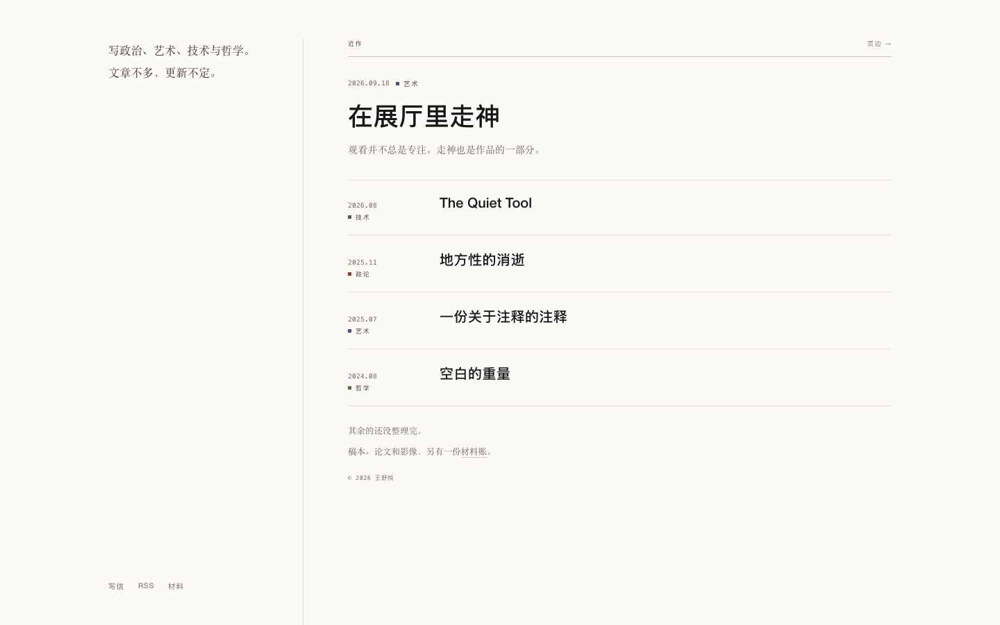
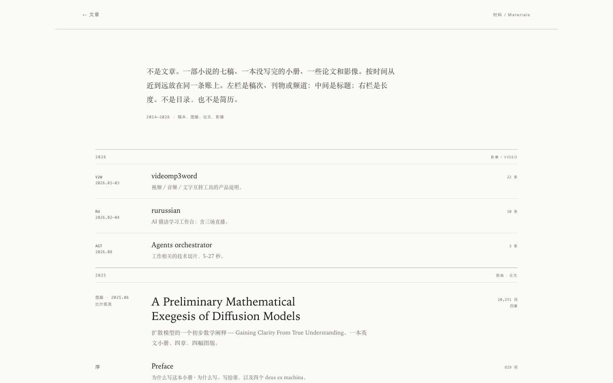
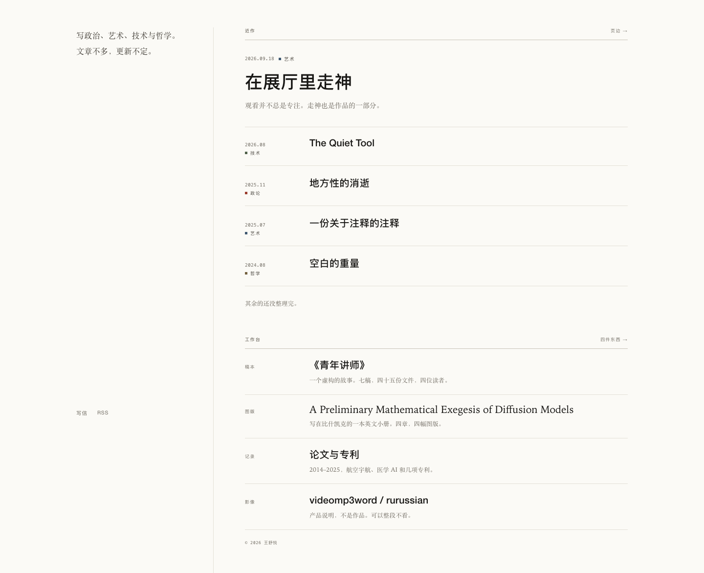
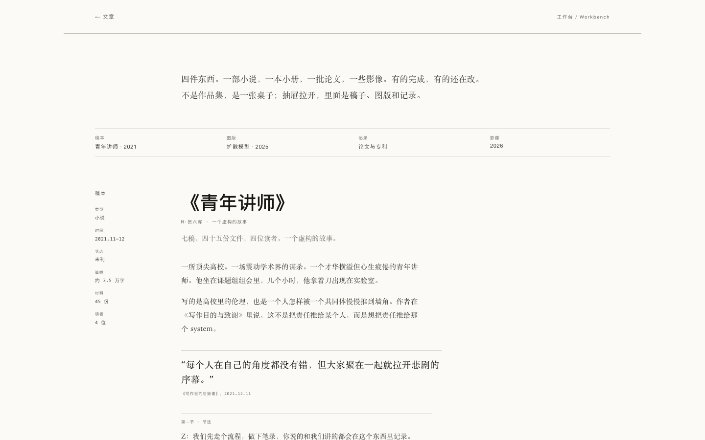
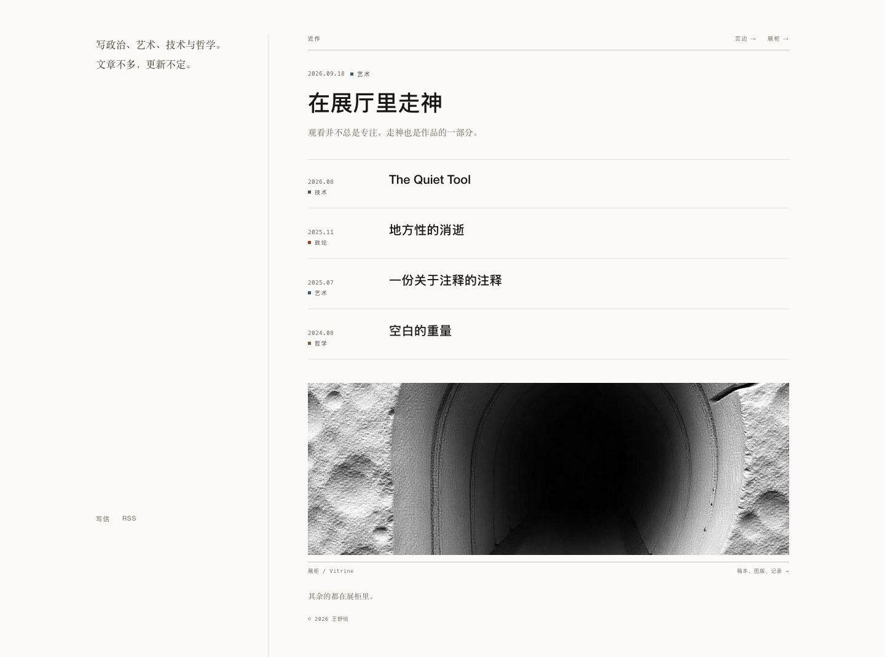
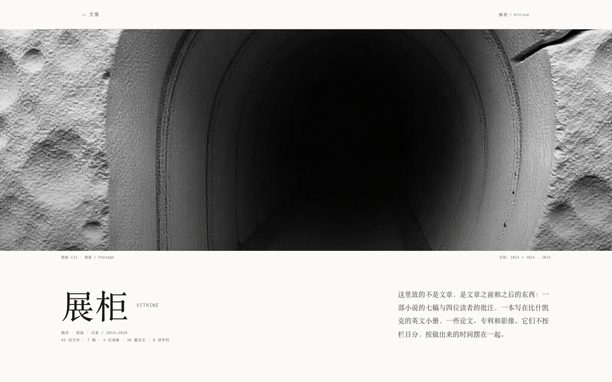

三种放法VITRINE · CONTENT & FORM
同一批材料，三种进入网站的方式。材料不改，只改它们被放在哪里、以什么形式出现。先看页面，再选。
已重构 / REBUILT 个人站：首页索引 · 小说全本 · 论文 / 技术分页 · A 年表取消 · 打开当前站点 →
材料账一条年表
把全部材料按时间压进一条账。首页只多一行链接；材料页没有图，只有年份、标题、长度。左栏是稿次、刊物或频道，中间是标题，右栏是字数、页数、条数。
- 适合
- 只想增加一个清单，不改变站的读法。维护成本最低。
- 代价
- 小说被埋在 2021 年；论文和影像比稿本更抢行；整体像简历。


工作台四只抽屉
四只抽屉：稿本、图版、记录、影像。每只抽屉有自己的左栏资料、正文和材料目录；首页多一个“工作台”区块。小说有版本表、读者和目录，小册有一章一条和一张图版。
- 适合
- 想让站从“文章”长成“作品站”，又不想把材料混成一条。
- 代价
- 多四页；容易变成作品集；小说和论文用同一种语气会打架。


展柜一页展览
一页展览。手稿影印、版本墙、四幅图版在前；论文退成一面题名墙，影像退成一条刻度。首页多一张图和“展柜”入口，进入后是一段完整的观看。
- 适合
- 想让材料本身成为作品，接受一页里出现图像和更强的设计。
- 代价
- 论文和影像不太适合展览；手稿与批注的公开风险最高；维护成本最高。


横向比较
| A 材料账 | B 工作台 | C 展柜 | |
|---|---|---|---|
| 第一眼 | 安静，几乎没变化 | 多了一个作品区块 | 一张图，一次展览 |
| 材料页 | 一条年表，全部材料 | 四只抽屉，各自成篇 | 一页展览，手稿在前 |
| 小说 | 七稿 + 四位读者，缩在 2021 | 独立档案：版本、读者、目录 | 手稿影印、版本墙、批注 |
| 小册 | 五章条目 | 一章一条 + 一张图版 | 四幅图版整版 + 章节 |
| 论文 | 三十条全列 | 三十条两列 + 专利表 | 三十条题名墙 |
| 影像 | 三个系列 | 三个系列 + 样本 | 一条刻度，注明可撤 |
| 维护 | 低 | 中 | 高 |
| 风险 | 低；小说容易被埋没 | 中；容易像作品集 | 中高；隐私与图像权重 |
我的建议
用 B 的骨架，借 C 的稿本处理。
论文和影像压成记录，不单独做展柜。
小说是这批材料里最值得被看见的：七稿、四位读者、三个旧题、一页红色批注。它值得 C 的版本墙和影印页；但不该把整站变成展柜。小册可以用 B 的一章一条 + 四幅图版；论文和专利回到 A 的账；影像整段撤掉，或只留页脚链接。
- 保留：简介、节选、版本表、匿名批注、四幅图版、论文目录。
- 不公开：全稿、原始批注、真实事件材料、读者姓名。
- 可选：影像、专利表、小册全文连载。
需要先定的三件事
小说公开到哪一层？
简介 + 节选；全文；只列目录；或者把全稿放进密码保护的私密档案。
用不用真名？
小说署 M·贺六浑；论文的 DOI 会指向真名；影像频道是第三个名字。绑不绑在一起，是内容决定，不是排版决定。
小册怎么发？
四章连载；只放目录和图版；或者只给 PDF。英文技术文本的读者不在这个站上，目录 + 图版可能已经够。
《青年讲师》以 2021 年复旦青年教师事件为底，是 roman à clef；材料里还有真实事件剪报、外界评论，以及四位读者的批注。公开全稿、原始批注或读者姓名，可能涉及隐私与名誉风险。建议公开简介、节选、版本元数据和匿名批注；全稿与背景材料放在私密档案里（密码 / noindex），或等小说正式出版之后再放。
影像频道是产品记录，不是写作；它会把“Henri Wang”这个身份和站绑在一起。论文的 DOI 也会把真名和文学笔名绑在一起。这两件事需要先决定，再决定排版。